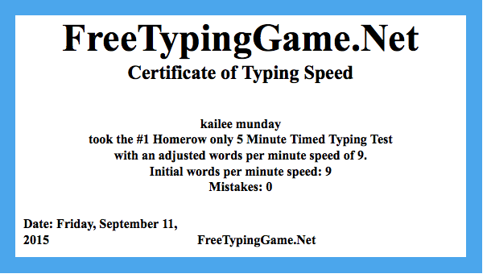
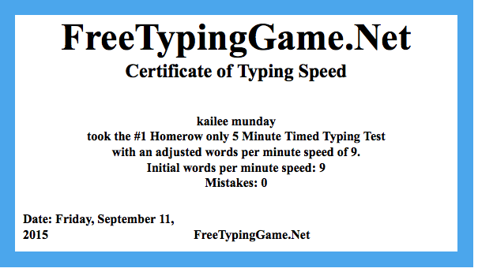

6th Grade
In 6th grade I learned how to type the basics and internet safty.

In 6th grade I learned how to type the basics and internet safty.
In 7th grade I learned how to do design related things, and graphics.
In 8th grade I learned how to code.
Christopher Gower| What I learned in 6th Grade | What I learned in 7th Grade | What I learned in 8th Grade | Links |
|---|---|---|---|
| Typing: I learned the basics of typing. Like not to look at my fingers and some of the letters on the homerow keyboard.I also learned internet safty | Photoshop: I learned how to edit an image.And using photoshop made a magazine. | Coding: I learned how to code websites in Dash, and visual studio, and i learned specific coding techniques in Khan Acadamy. | Iternet poster My magazine |
| Microsoft Word: I learned how to make posters and Newsletters useing what Microsoft word provided. | Sketchup: Sketchup is an app on mac computers where you learn how to build things such as furniture, houses, etc | Dash: In dash i learned how to make websites and blogs and coding | 6th Grade Poster Sketch Up House Dash project |
| Khan academy: I learned some of hte basic code, and how to code animals on khan acadmey. | Ilistraiter: I learned how to make logos, and made a logo for our project that we had in Sketch up | Khan academy: I learned some coding techniques and we had mini projects to show our knowledge on what we just learned from a video | Animal in Code Sketch Up House Khan Academy Project |
| Microsoft Excel: I learned how to make graphs, and tables | Floor planner: I learned how to make a classroom for a project. We had to go to a classroom and measure the whole classroom then put those measurement on Floor planner. | Visual studio code: I learned how to code an entire website from scratch | Graph Floor Planner Project |
ATM stands for Applied Technology Magnet. Atm is a 3 year program at Bancroft middle school. Atm is a great program that has helped me with many things. Because of the ATM program i have learned how to type without looking and to type with all my fingers.